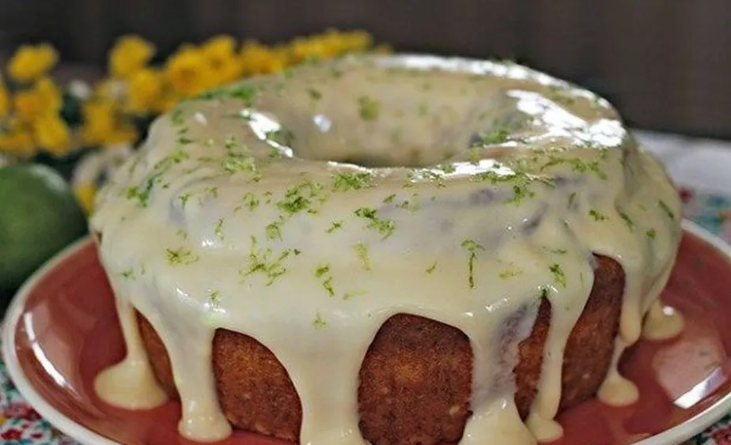

Aprenda a preparar um delicioso bolo de limão-taiti que leva um
recheio e uma cobertura deliciosa de mousse de limão. A receita
é rápida, fácil de fazer e perfeita para servir para quem visitar
a sua casa, durante o café da manhã ou lanche da tarde!
Ingredientes
Como fazer limão taiti
Ingredientes da massa
3 ovos
1 copo de água
2 xícaras de farinha de trigo
Suco de 1 limão
1 colher de sopa de fermento químico
1 xícara de açúcar
Raspas de 1 limão
Ingredientes do recheio
1 xícara de suco de limão
1 caixinha de leite condensado
1 caixinha de creme de leite

Como fazer limão taiti
No liquidificador, coloque os ovos, a água, o suco de limão, o açúcar e bata;
Passe a mistura do liquidificador para uma bacia, adicione a farinha de trigo e mexa;
Acrescente as raspas de limão e misture novamente;
Adicione o fermento e mexa;
Passe a massa para uma forma untada com óleo e farinha de trigo;
Leve para assar no forno preaquecido a 180ºC por 25 minutos;
Retire do forno e deixe a massa esfriar antes de finalizar;
Enquanto isso, prepare a o recheio: no liquidificador, adicione o suco do limão, leite condensado, creme de leite e bata até atingir ponto de mousse;
Corte o bolo ao meio, umedeça a massa com uma mistura de água, suco de limão e açúcar;
Espalhe a mousse em uma parte do bolo e cubra com a outra parte do bolo;
Espalhe o restante da mousse por cima do bolo, como se fosse uma cobertura;
Espalhe raspas de limão por cima do bolo e sirva essa delícia!